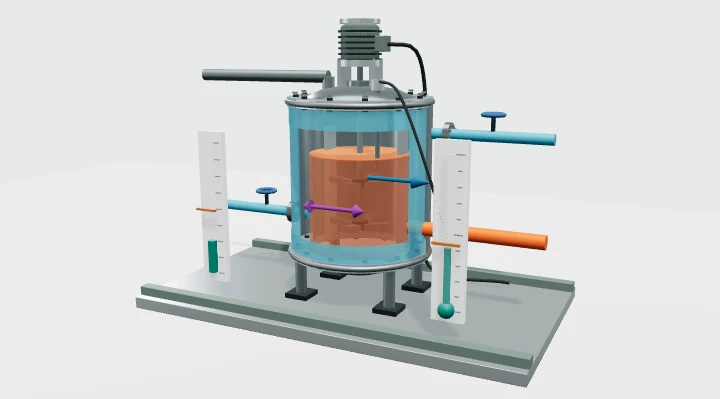

연속 교반 탱크 반응기
발열 반응의 물질·열수지를 바탕으로 냉각 재킷의 PI 온도 제어를 관찰합니다.
재킷은 반응기 바깥을 둘러싼 냉각수 통로입니다. 반응물과 섞이지 않고 벽을 통해 열을 빼앗으며, 이 실험에서는 냉각수 온도로 반응기 온도를 조절합니다.
연속 교반 탱크 반응기
0.005 s
로딩 중…
반응 온도 · °C
최근 15초 · 시간 (s) · 고정 범위 40 … 130 °C
반응물 농도 · mol/L
최근 15초 · 시간 (s) · 고정 범위 0 … 1.7 mol/L
냉각수 온도 · °C
최근 15초 · 시간 (s) · 고정 범위 0 … 60 °C
제어 구조
그림에 초점을 맞춘 뒤 방향키로 좌우로 스크롤하세요.
모델·제어식·단위·실험 범위
모델과 제어식
실험 범위와 단위
내부 계산에는 절대온도 K를 사용합니다. 목표 반응 온도와 온도 측정값·그래프는 °C로 표시하지만, 최저 냉각수 온도 설정은 K 단위입니다. 입니다. 아레니우스 지수의 8750 K는 입니다.Internal calculations use absolute K. The reactor target, temperature readouts and plots use °C, but the minimum coolant temperature setting uses K. . Arrhenius activation temperature is 8750 K.
, , , , , , . 초 단위로 변환합니다., , , , , , . Rates are converted to seconds.
초기 정상점은 , , 입니다. 냉각수 온도가 올라가면 냉각이 줄므로 제어기 부호는 양수입니다.Initial equilibrium is , , . Warmer coolant reduces cooling, so controller gain is positive.
재킷 동특성·상변화는 생략합니다. , 또는 농도 범위 이탈 시 안전 정지합니다. 냉각 부족으로 열폭주가 가능합니다.Jacket dynamics and phase changes are omitted. , or invalid concentration triggers a safety trip. Insufficient cooling can cause thermal runaway.
제어 입력이 제한 범위를 벗어난 상태에서 오차가 포화를 더 심하게 만드는 경우에는 적분 누적을 멈춥니다. 이면 누적 적분값을 0으로 초기화합니다. 외란을 가하면 공급 농도가 0.2 mol/L 증가한 상태로 유지되며, 버튼을 여러 번 눌러도 증가량은 누적되지 않습니다.Conditional integration prevents windup; clears integral bias. Disturbance is a persistent, non-accumulating +0.2 mol/L feed change.
고정 계산 간격 0.005 s. 숨겨진 탭은 일시정지합니다.
- 목표 반응 온도: 60 … 100 °C
- 비례 이득: 0 … 15 K/K
- 적분 이득: 0 … 0.5 1/s
- 공급 농도: 0.5 … 1.5 mol/L
- 최저 냉각수 온도: 280 … 320 K
모델과 참고 자료
관련 MATLAB 프로젝트: Amir Amini의 CSTR 제어 예제 ↗
Amini의 File Exchange 예제는 반응물 농도, 반응 온도, 냉각수 온도의 세 상태를 계산합니다. 이 실험의 반응기 모델은 농도와 반응 온도의 두 상태만 계산하며, PI 제어기가 재킷 온도를 직접 지정합니다.
비교 모델: APMonitor의 교반 반응기 벤치마크 ↗
APMonitor가 소개한 Henson–Seborg 벤치마크와 물질·열수지 구조, 공급 온도(350 K), 활성화 온도()가 같습니다. 이 실험에서는 350 K에서 반응 속도 상수가 이 되도록 보정했습니다.The Henson–Seborg benchmark documented by APMonitor has the same mass and energy balance structure, feed temperature (350 K) and activation temperature (). This experiment calibrates the rate constant to at 350 K.